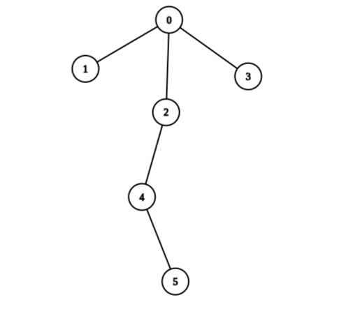
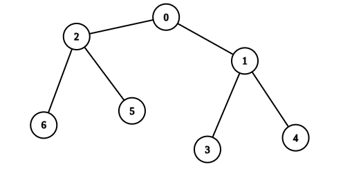

| Category | Difficulty | Likes | Dislikes |
|---|---|---|---|
| Algorithms | Medium | 361 | 76 |
google
There is an undirected tree with n nodes labeled from 0 to n - 1, and rooted at node 0. You are given a 2D integer array edges of length n - 1, where edges[i] = [ai, bi] indicates that there is an edge between nodes ai and bi in the tree.
You are also given a 0-indexed integer array values of length n, where values[i] is the value associated with the ith node.
You start with a score of 0. In one operation, you can:
i.values[i] to your score.values[i] to 0.A tree is healthy if the sum of values on the path from the root to any leaf node is different than zero.
Return the maximum score you can obtain after performing these operations on the tree any number of times so that it remains healthy.
Example 1:

Input: edges = [[0,1],[0,2],[0,3],[2,4],[4,5]], values = [5,2,5,2,1,1]
Output: 11
Explanation: We can choose nodes 1, 2, 3, 4, and 5. The value of the root is non-zero. Hence, the sum of values on the path from the root to any leaf is different than zero. Therefore, the tree is healthy and the score is values[1] + values[2] + values[3] + values[4] + values[5] = 11.
It can be shown that 11 is the maximum score obtainable after any number of operations on the tree.Example 2:

Input: edges = [[0,1],[0,2],[1,3],[1,4],[2,5],[2,6]], values = [20,10,9,7,4,3,5]
Output: 40
Explanation: We can choose nodes 0, 2, 3, and 4.
- The sum of values on the path from 0 to 4 is equal to 10.
- The sum of values on the path from 0 to 3 is equal to 10.
- The sum of values on the path from 0 to 5 is equal to 3.
- The sum of values on the path from 0 to 6 is equal to 5.
Therefore, the tree is healthy and the score is values[0] + values[2] + values[3] + values[4] = 40.
It can be shown that 40 is the maximum score obtainable after any number of operations on the tree.
Constraints:
2 <= n <= 2 * 104edges.length == n - 1edges[i].length == 20 <= ai, bi < nvalues.length == n1 <= values[i] <= 109edges represents a valid tree.